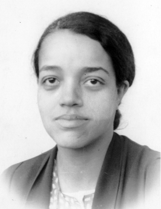
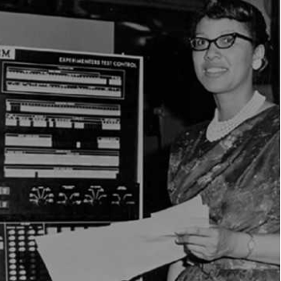
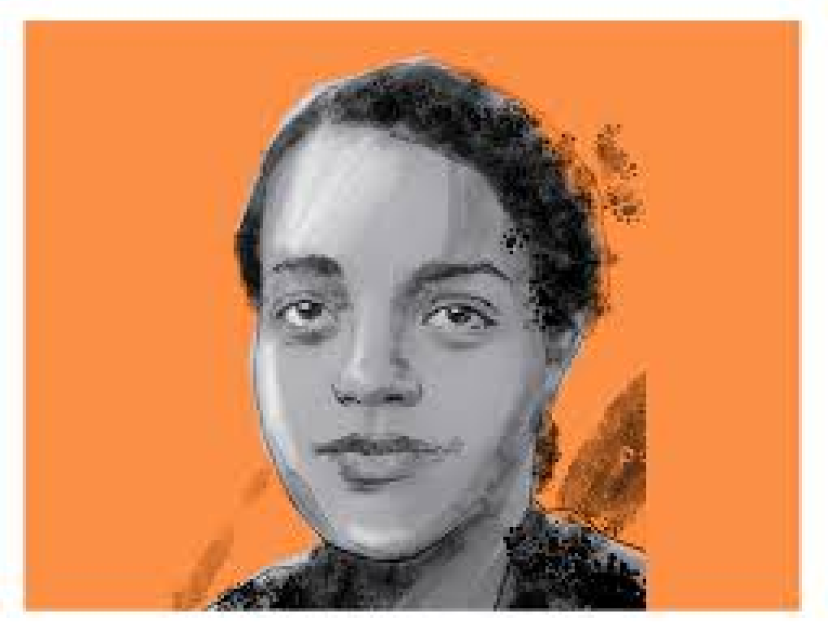
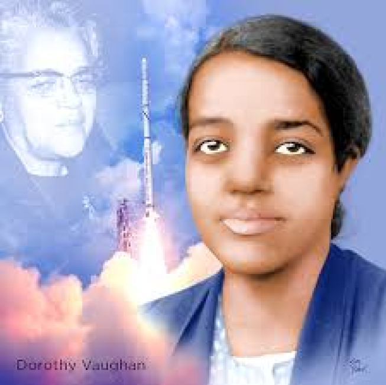
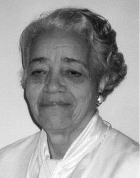

O início da vida de Dorothy Vaughan

Em 20 de setembro de 1910, na cidade de Kansas City, localizada no Missouri, nasceu
Dorothy Jean Johnson. Aos 7 anos, a filha de Annie e Leonard Johnson mudaria-se com a família para
Morgantown, West Virginia, onde se formaria na Beechurst High School, em 1925, como oradora da
turma.
Mais tarde, ela receberia uma bolsa de estudos para participar da Universidade
Wilberforce, em Ohio. Em 1929, formou-se com um B.A em matemática e, embora encorajada por
professores a fazer pós-graduação na Howard University, Vaughan priorizaria sua carreira como
professora de matemática na Robert Russa Moton High School, para ajudar a família durante a grande
depressão.
Em 1932, casou-se com Howard Vaughan. Após a união, o casal mudou-se para Newport News, Virgínia,
onde tiveram 6 filhos: Ann, Maida, Leonard, Kenneth, Michael e Donald. Durante os seus 14 anos de
docência, as escolas públicas e todo o estado da Virgínia permaneciam subjugados às leis de Jim
Crow, que estabeleciam a segregação racial. Contudo, sua dedicação à igreja e a sua família seriam
fatores que impulsionariam sua busca pela mudança e assim começou a trabalhar para a NASA.
Uma trajetória de cálculos complexos

Em 1935, o Comitê Consultivo Nacional para a Aeronáutica (NACA) havia estabelecido uma
seção de mulheres matemáticas, que realizavam cálculos complexos.
Em 1941, o presidente Franklin D. Roosevelt emitiu a Ordem Executiva 8802 que acabaria
com a segregação na indústria de defesa. A Ordem Executiva 9346 viria para acabar com a
discriminação racial na contratação e na promoção entre agências federais e empreiteiros de defesa.
Isso ajudou a garantir que o esforço de guerra atraísse toda a sociedade americana após a entrada
dos Estados Unidos na Segunda Guerra Mundial, em 1942. Com a promulgação das duas ordens executivas,
e com muitos homens sendo levados ao serviço, agências federais como o NACA acabaram por expandir
sua contratação e aumentou o recrutamento de mulheres, incluindo mulheres negras para apoiar a
produção de aviões de guerra.
Dois anos após a emissão das Ordens Executivas 8802 e 9346, o Langley Memorial Aeronautical
Laboratory (Langley Research Center), uma instalação do NACA, também começou a contratar mais
mulheres negras para atender ao aumento drástico na demanda por processamento de dados de pesquisa
aeronáutica.

Em 1943, Vaughan assumiu o que ela pensou que seria um cargo temporário na NACA
(agora NASA) no Langley Memorial Aeronautical Laboratory em Hampton, Virgínia. Ela foi designada
para a West Area Computers, um grupo segregado que consistia em todas as matemáticas
afro-americanas. Essas mulheres forneceram informações críticas aos engenheiros que conduziam
experimentos aeronáuticos, testando o desempenho e a durabilidade de novos equipamentos
espaciais. A notável matemática Katherine Johnson foi temporariamente designada para o grupo de
Vaughan enquanto trabalhava em Langley. Apesar de trabalharem entre colegas brancos, as mulheres
eram obrigadas a usar o refeitório, o banheiro e os aposentos separados. Vaughan ia e voltava
diariamente para o trabalho, usando transporte público.

Vaughan foi nomeada supervisora interina do programa em 1949, após a morte de
seu empresário e assim se tornou a primeira mulher afro-americana a ser promovida na agência.
Demorou dois anos, no entanto, para ela alcançar o status permanente nessa posição. Vaughan
permaneceu na NASA pelos próximos vinte e oito anos em vários cargos até sua aposentadoria em
1971. A Igreja AME de St. Paul em Newport News, Virgínia, homenageou Vaughan por ser membro por
mais de cinquenta anos, onde ela esteve envolvida no trabalho missionário e ministério de música
da igreja. Ela também foi benfeitora da Phyllis Wheatley YWCA em Washington DC e membro de sua
organização Silver Bells.

Aos 61 anos, aposentou-se no mesmo cargo, em 1971. Em seus últimos anos, trabalhou
com as suas colegas e também matemáticas Katherine G. Johnson e Mary Jackson no lançamento do
astronauta John Glenn em órbita. Viria a falecer em 10 de novembro de 2008, aos 98 anos. Vaughan
era membro da Alpha Kappa Alpha, uma irmandade afro-americana, e também participante ativa da
Igreja Episcopal Metodista Africana, onde participou de atividades musicais e missionárias,
tendo até escrito uma música chamada “Math Math”.
Estrelas Além do Tempo

Em 2016, Vaughan foi destaque no filme Hidden Figures , estrelado por Taraji P. Henson, Octavia
Spencer e Janelle Monae. O filme se concentrou em três afro-americanos da NASA que calcularam
trajetórias de voo para o Projeto Mercury e Apollo 11 na década de 1960. Ao fazer isso,
documentou as carreiras e contribuições de Katherine Johnson, Mary Winston Jackson e Vaughan,
interpretada por Octavia Spencer no filme.
Filme que mostra a discrepância na contratação de mulheres negras para trabalhar em áreas de
programação na aeronáutica, tanto que em uma das cenas, é possível perceber sua urgência em
ensinar para as outras mulheres negras uma nova linguagem de programação, para que elas se
mantivessem úteis para manter seus empregos. Linguagem, inclusive, que ela buscou aprender
sozinha, demonstrando aptidão no entendimento de como mexer no grande computador de cartões
perfurados da NASA, na época, criado pela IBM, antes mesmo dos técnicos – homens e brancos.
Vaughan demonstrava interesse em subir para outro cargo de gestão na NASA, porém, apesar de sua
importante contribuição e habilidades lógicas, nunca recebeu uma oferta.